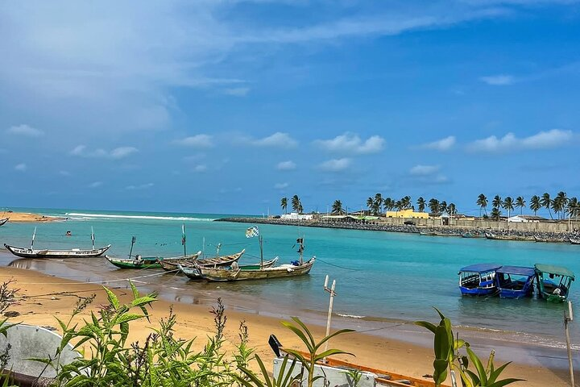
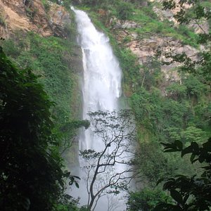
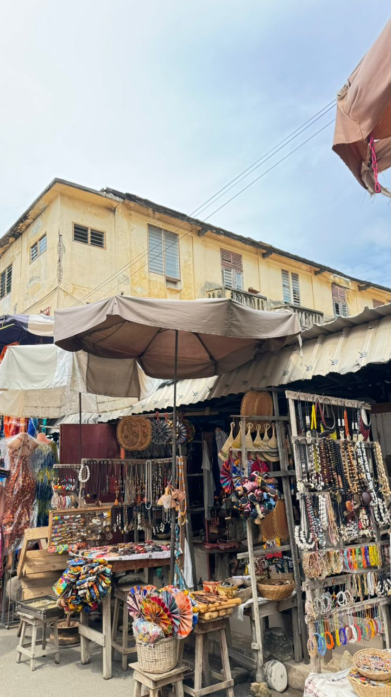

Destinations
Togo & Bénin, deux pays voisins à explorer
Plages, lacs sacrés, cascades, marchés colorés et lieux de mémoire : un aperçu des destinations visitées pendant nos séjours.
Togo

Lomé
La capitale, posée au bord de l'océan. Son musée national, son marché des fétiches unique au monde, sa plage et sa gastronomie.

Togoville
Sur les rives du lac Togo, berceau historique du vaudou. Un lieu chargé de spiritualité et de récits.

Kpalimé
La région verte du Togo : cascade de Womé, forêt tropicale, artisanat et randonnées dans les collines.
Bénin

Cotonou
La grande ville béninoise et son marché Dantokpa, l'un des plus vastes d'Afrique de l'Ouest. Un tourbillon de couleurs, de sons et de saveurs.
Ouidah
Haut lieu de mémoire : la Route des Esclaves, le Temple des Pythons et la Porte du Non-Retour, face à l'océan.